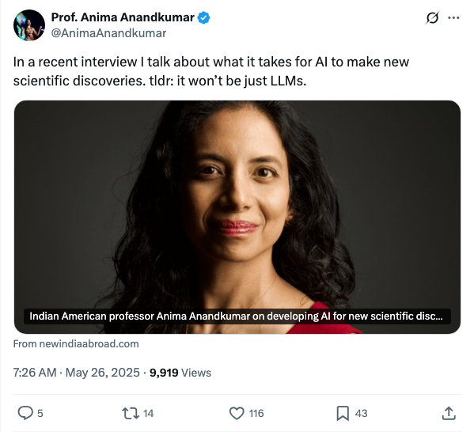

In a recent interview I talk about what it takes for AI to make new scientific discoveries. tldr: it won’t be just LLMs.
Published: 2025-05-26T07:26:00Z 在最近的采访中，Anima Anandkumar教授讨论了AI在进行科学发现方面的必要条件，强调不仅仅依赖于大型语言模型（LLMs）。
2025-05-27
所有内容
在最近的采访中，Anima Anandkumar教授讨论了AI在进行科学发现方面的必要条件，强调不仅仅依赖于大型语言模型（LLMs）。
这篇文章提供了一份关于大语言模型（LLM）到幻觉（hallucinations）等常见人工智能术语的指南。这些术语涵盖了一系列与人工智能和机器学习相关的概念，包括模型训练、数据集处理、推理与解释以及应用实例。文章还引用了TechCrunch作为信息来源，并提供了一些实例来展示其实际应用。
这篇文章探讨了AI生成视频内容的限制，指出这些内容往往基于人类创造的素材，反映出AI技术仍受制于真实环境的限制，尽管理论上AI不应受此约束。
《人工智能的帝国》成为@NPR当天推荐书籍。这本书探讨了OpenAI及硅谷在建构被称为AGI的人造智能方面的异常权力攫取，提出了对Sam Altman和Elon Musk的AI帝国的批判性看法。
华为诺亚方舟实验室联合中科大发布创新性CBQ（Cross-Block Quantization）算法，显著解决大模型低比特量化面临的性能下降与依赖挑战...
Nous Research成功推出Psyche网络，利用Solana区块链技术汇聚全球闲散计算资源，首次实现大规模去中心化AI训练。该网络已启动40B参数大语言模型Consilience的预训练...
谷歌最新发布的Veo3文生视频模型，在近期开发者大会上惊艳亮相，突破性地实现了视频与音频的同步生成，涵盖画面、环境音效、背景音乐及人物对白，并能精准匹配口型。通过实测，Veo3在生成脱口秀、新闻播报、情感演唱乃至Twitch风格游戏直播等场景时，展现出极高的逼真度和音画一致性，尤其在处理单一场景与简单动作时效果卓越。然而，其在生成复杂体操动作或篮球比赛等高速、多变场景时，仍存在局部扭曲或逻辑不符的局限。尽管如此，Veo3的问世标志着生成式AI在视频创作领域迈出重要一步，开启了内容生成的新可能。
全球首个人形机器人格斗赛近期在杭州圆满落幕，标志着机器人技术发展的一个里程碑时刻。比赛中，宇树科技G1人形机器人进行了激烈对抗，展现了灵活的格斗技巧。赛事规则涵盖击打得分、倒地扣分，并结合了人类遥控和语音控制。此次格斗赛不仅是娱乐表演，更在于在高压、快节奏环境中，充分检验人形机器人的抗冲击性、多模态感知以及全身协调能力。通过强化学习和先进算法，机器人实现了对专业选手动作的模仿和优化，体现了AI与机器人硬件在极端条件下的协同能力，为人形机器人未来的性能提升提供了宝贵经验。
国产AI工具“问小白”凭借其创新的“小白研报”和AI搜索功能，正在变革传统办公与科研方式。其中，“小白研报”能将繁冗的财报解读、行业研究等工作在20分钟内转化为详尽且附带可视化网页的万字报告，通过模拟人类思维、多轮思考与工具调用，深度整合多源信息，提供专业分析和决策支持。其AI搜索功能则支持多模型切换和多种搜索模式，覆盖全球权威学术数据库，实现精准高效的信息检索。问小白以其卓越的效率、智能化的信息处理能力和“输入问题即获得决策支持”的Agent产品特质，显著提升了用户的工作价值和时间复利，成功印证了AI从“卖工具”向“卖收益”的价值转化理念。
硅谷正掀起一场前所未有的AI人才争夺战。OpenAI、谷歌DeepMind等科技巨头为吸引和留住“超级明星研究员”，不惜开出千万美元级年薪和股权激励，甚至提供私人飞机接送等特殊待遇。文章指出，AI热潮使得能推动大模型发展的“10,000倍研究员”成为行业核心，其稀缺性达到新高。研究员在选择公司时，除了薪酬，研究资源与愿景同样是关键考量。这场人才战正重塑AI行业格局，吸引着各领域顶尖人才涌入。
新智元迎来成立十周年里程碑，此篇报道恰逢其时，并同步提及人工超级智能（ASI）这一前沿概念的潜在降临。文章暗示，新智元将借此契机，深化在人工智能领域的布局与影响力。标题中“诚邀你加入”的表述，强烈预示着新智元可能围绕十周年庆典举办一场引人瞩目的行业盛会，或启动重大人才招募计划，旨在汇聚全球AI精英，共同探索并引领ASI时代的未来发展方向。这篇报道凸显了新智元作为资深AI媒体，在行业发展关键节点所扮演的连接与推动角色，展望AI的下一个黄金十年。
微软副总裁Nando de Freitas在社交平台X上启动“开课”系列，深入讲解强化学习（RL）及其在大语言模型（LLM）中的应用。文章指出，监督学习侧重模仿，而强化学习强调选择性模仿与自我提升，能从次优数据中学习并超越专家。内容详细介绍了分布式强化学习系统中的Actor-Learner架构、离线强化学习、单步与多步RL问题。Freitas强调，当前主流LLM的RL后训练，核心在于单步RL，并阐释了策略梯度、基线减法、KL散度、重要性采样及PPO等关键算法与技巧。文章总结，理解这些理论对于当前LLM的强化学习应用至关重要。
LLaMA Factory是一个统一且高效的大语言模型微调框架，旨在简化超过100种大型语言模型的微调过程。该框架支持多种微调方法，包括SFT、DPO、KTO、ORPO等，并集成了全参数微调、Freeze、LoRA及2-8位QLoRA等资源优化技术。它提供了零代码的命令行界面和Web UI（LLaMA Board），支持多模态任务，并整合了FlashAttention-2、vLLM等多种加速技术，显著提升训练和推理效率。LLaMA Factory已被Amazon、NVIDIA等知名机构采用，广泛应用于模型定制和部署场景。

R&D-Agent是由微软开发的一款机器学习工程智能体，旨在自动化数据驱动的研发流程，特别聚焦于模型和数据的开发与迭代。其核心框架包含“研究”（提出新想法）和“开发”（实现想法）两大组件，通过与真实世界验证反馈相结合，实现能力的持续进化。该智能体在MLE-bench基准测试中位居前列，并已成功应用于量化交易、数据挖掘、研究辅助（如阅读论文/报告）和Kaggle竞赛等多个实际场景，支持集成多种大型语言模型后端，并提供可视化监控界面。
Langflow是一个强大的工具，专注于构建和部署AI驱动的智能体及工作流。它为开发者提供了直观的可视化构建界面和内置API服务器，能将智能体转化为可集成到任何应用中的API端点。Langflow支持主流的大语言模型、向量数据库及丰富的AI工具库，具备代码访问、Playground测试、多智能体编排、API部署和可观测性等核心功能，支持自部署和全托管。
MindsDB是一个开源的AI数据库层，旨在帮助用户、AI、智能体和应用从分散的大规模数据源（包括数据库、数据仓库和SaaS应用）中获取准确答案。其核心理念是连接、统一和响应数据。MindsDB支持连接数百种数据源，通过SQL方言统一查询，并提供虚拟表（视图、知识库、ML模型、任务）进行数据准备和转换。用户可以通过内置智能体或MCP协议与数据进行交互。它支持Docker和PyPI部署，可广泛应用于构建基于现有数据基础设施的AI应用。
Lobe Chat是一个开源、现代设计的ChatGPT/LLMs UI框架，支持语音合成、多模态和可扩展的插件系统（函数调用）。它提供一键免费部署私有AI聊天应用的能力，支持OpenAI、Claude、Gemini、Groq、Ollama等多种模型服务商及本地模型。核心功能包括思维链可视化、分支对话、文件上传/知识库、模型视觉识别、TTS/STT语音对话、文生图、插件市场和智能体市场。项目注重性能、隐私保护（本地存储）、精美UI设计（PWA、移动适配、主题定制）和便捷的自我托管部署方式（Vercel, Docker）。

Qlib是由微软开源的面向AI的量化投资平台，旨在利用人工智能技术赋能量化投资研究与生产。平台提供了完整的数据处理、模型训练、回测等机器学习流程，覆盖alpha挖掘、风险建模、投资组合优化和订单执行等量化投资全链条。Qlib支持监督学习、市场动态建模、强化学习等多种机器学习范式，并提供高效的数据服务。近期，平台引入了基于大型语言模型的自主进化智能体RD-Agent，用于自动化因子挖掘和模型优化。

近期的大型推理模型 (LRMs) 通过强化学习 (RL) 展示了强大的推理能力。这些改进主要体现在短上下文推理任务中。相比之下，如何通过强化学习将大型推理模型有效扩展到处理和推理长上下文输入，仍然是一个关键的未解决挑战。为了弥合这一差距，我们首先形式化了长上下文推理强化学习范式，并指出了训练效率低下和优化过程不稳定等关键挑战。为解决这些问题，我们提出了 QwenLong-L1 框架，该框架通过渐进式上下文缩放将短上下文大型推理模型适应长上下文场景。具体而言，我们采用热启动的指令微调 (SFT) 阶段建立鲁棒的初始策略，继之以课程指导的分阶段强化学习技术稳定策略演进，并辅以难度感知的追溯采样策略激励策略探索。在七个长上下文文档问答基准上的实验表明，QwenLong-L1-32B 优于 OpenAI-o3-mini 和 Qwen3-235B-A22B 等旗舰级大型推理模型，性能与 Claude-3.7-Sonnet-Thinking 持平，证明了其在最先进大型推理模型中的领先性能。这项工作推动了能够对信息密集型环境进行鲁棒推理的实用长上下文大型推理模型的发展。

本技术报告介绍了QwenLong-CPRS，一个专为显式长上下文优化设计的上下文压缩框架，旨在解决预填充（prefill）阶段高昂的计算开销以及大型语言模型（LLMs）在处理长序列时出现的“迷失中间”（lost in the middle）性能下降问题。QwenLong-CPRS 通过一种新颖的动态上下文优化机制实现，它支持在自然语言指令引导下的多粒度上下文压缩，从而同时提升效率和性能。 QwenLong-CPRS 从Qwen架构系列演进而来，引入了四项关键创新：(1) 自然语言引导的动态优化，(2) 用于增强边界感知的双向推理层，(3) 带有语言建模头的Token批评机制，以及(4) 窗口并行推理。 在五个基准测试（涵盖4K至2M词的上下文）上的全面评估证明了QwenLong-CPRS三重有效性：(1) 在准确性和效率方面持续优于RAG和稀疏注意力等其他上下文管理方法。(2) 它能够与所有旗舰级LLMs（包括GPT-4o、Gemini2.0-pro、Claude3.7-sonnet、DeepSeek-v3和Qwen2.5-max）进行架构无关的集成，在实现21.59倍上下文压缩的同时，平均性能提升了19.15个百分点；(3) 与Qwen2.5-32B-Instruct一同部署时，QwenLong-CPRS在Ruler-128K和InfiniteBench上分别超越了主流专有LLMs 4.85和10.88个百分点，建立了新的最先进（SOTA）性能。

大型语言模型（LLMs）的快速发展伴随着计算需求的空前增长，最先进模型的训练成本每隔几个月就会翻倍。直接以低精度算术训练模型提供了一种解决方案，能够提高计算吞吐量和能源效率。具体而言，NVIDIA 最近推出的 Blackwell 架构支持极低精度运算，特别是 FP4 变体，有望带来显著的效率提升。然而，当前用于 FP4 精度训练 LLMs 的算法面临显著的精度下降问题，并且常常依赖于混合精度回退。在本文中，我们系统地研究了硬件支持的 FP4 训练，并引入了 Quartet，这是一种新的方法，能够实现准确的端到端 FP4 训练，其中所有主要计算（例如线性层中的计算）都在低精度下执行。通过在 Llama 类型模型上进行大量评估，我们揭示了一种新的低精度缩放定律，该定律量化了不同位宽下的性能权衡，并使我们能够识别出一种在精度与计算量方面“接近最优”的低精度训练技术，即 Quartet。我们使用为 NVIDIA Blackwell GPU 定制优化的 CUDA 内核实现了 Quartet，并表明它可以达到 FP4 精度的最先进水平，成功训练了亿级规模的模型。我们的方法表明，完全基于 FP4 的训练是标准精度和 FP8 训练的一个有竞争力的替代方案。我们的代码可在 https://github.com/IST-DASLab/Quartet 获取。

大型语言模型在处理长而复杂的推理任务中展现出了卓越的能力。然而，它们常常表现出对现有推理模式的过度依赖，我们称之为“推理僵化”现象。尽管用户给出了明确指令，这些模型仍经常忽略清晰指定的条件，转而采用习惯性的推理路径，导致得到错误结论。这种行为带来了重大挑战，尤其是在数学和逻辑谜题等领域，其中精确遵守指定约束至关重要。为了系统地研究推理僵化这一在先前工作中很大程度上未被探索的行为，我们引入了一个由专家精心策划的诊断数据集。我们的数据集包括对现有数学基准（即AIME和MATH500）进行特殊修改的版本，以及经过精心重新设计、要求偏离现有熟悉推理策略的知名谜题。利用该数据集，我们识别出了当模型转而采用根深蒂固的推理方式时出现的常见“污染”模式。具体而言，我们将这种污染分为三种不同的模式：（i）解读超载（Interpretation Overload），（ii）输入不信任（Input Distrust），以及（iii）部分指令关注（Partial Instruction Attention），每种模式都会导致模型忽视或扭曲所提供的指令。我们公开发布我们的诊断数据集，以促进未来关于缓解语言模型中推理僵化的研究。

大型推理模型（LRM）擅长使用思维链（CoT）推理解决复杂任务。然而，它们过度思考的倾向会导致不必要的冗长推理链，从而显著增加推理成本。为了缓解这个问题，我们引入了 VeriThinker，一种新颖的 CoT 压缩方法。与使用合成的简洁 CoT 数据直接在原始推理任务上微调 LRM 的传统方法不同，我们创新性地仅通过辅助验证任务来微调模型。通过训练 LRM 准确验证 CoT 解决方案的正确性，LRM 本身对后续自我反思步骤的必要性变得更具辨别力，从而有效抑制过度思考。大量实验验证了 VeriThinker 在大幅缩短推理链长度的同时，保持甚至略微提高了准确性。将其应用于 DeepSeek-R1-Distill-Qwen-7B 模型时，我们的方法在 MATH500 数据集上将推理 token 数从 3790 减少到 2125，同时准确率提高了 0.8%（从 94.0% 到 94.8%）；在 AIME25 数据集上，token 数从 14321 减少到 10287，准确率提高了 2.1%（从 38.7% 到 40.8%）。此外，我们的实验表明 VeriThinker 还可以零样本泛化到推测性推理。代码可在 https://github.com/czg1225/VeriThinker 获取。

混合专家模型（MoE）通过在推理过程中稀疏激活专家，实现了大型语言模型（LLMs）的有效扩展。为了在内存受限的设备上有效部署大型MoE模型，许多系统引入了*专家卸载*机制，将一部分专家缓存在高速内存中，而将其他专家留在慢速内存中以便在CPU上运行或按需加载。尽管一些研究已经利用了专家激活的局部性（即连续的token激活相似的专家），但这种**局部路由一致性**的程度在不同模型之间差异很大，并且尚未得到充分研究。本文提出了两个评估MoE模型局部路由一致性的指标：（1）**段路由最佳性能（SRP）**，用于评估一组固定专家在多大程度上能够满足一段token的需求；（2）**段缓存最佳命中率（SCH）**，用于衡量在给定缓存大小限制下的最优段级别缓存命中率。我们分析了20个不同大小和架构的MoE LLMs，发现每一层都应用MoE且不使用共享专家的模型表现出最高的局部路由一致性。我们进一步表明，领域专业化专家比词汇专业化专家对路由一致性的贡献更大，并且大多数模型可以在缓存大小约为活动专家数量的2倍时平衡缓存的有效性和效率。这些发现为在不牺牲推理速度的情况下设计和部署内存高效的MoE模型奠定了基础。我们在https://github.com/ljcleo/moe-lrc 上发布了用于复现实验的代码。